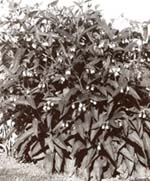
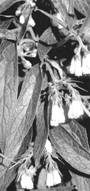

A seasonal guide to medicinal herbs by Corrine Martin
Every year comfrey leaves are a main ingredient in a healing salve we use for wounds, scratches, sunburn and a variety of other skin irritations experienced in a typically busy summer. And the leaves and roots go into tea along with other herbs for coughs and congestion-and especially for an asthma tea for my daughter.
Several years ago, when I was both working and going to school, I started to develop ulcer symptoms. Comfrey tea became part of my daily regimen and within just a few weeks, all my symptoms were gone. It's hard to imagine our home medicine chest without comfrey in one form or another.
Description: Comfrey is a tall, rough-leaved plant found growing in waste places and old fields. It can become a nuisance since it reproduces rapidly-even from just a tiny bit of root.
Comfrey roots grow deep in the soil and are covered with a dark brown bark that reveals a white inner core when cut. The stems and leaves are covered with coarse, bristly hairs. Leaves are large near the bottom of the plants, up to 12 inches long, and get smaller toward the top. The stalks of lower leaves are long, and when torn, they produce tough and rubbery fibers that stretch before tearing. The leaves are lance- or oval-shaped, with softly pointed tips. They occur alternately along the stem and have simple, smooth margins. Generally, the leaves, stems, and roots all produce a extremely mucilaginous juice when broken. Plant height is up to 3 or 4 feet.
Comfrey flowers are generally purplish-blue, but may vary widely, ranging from white to pink with occasional yellowish tinges. The blossoms are bell-shaped and occur in a raceme at the tip of curved stem throughout the summer season. Flowers are 1/2 to 1 inch long, and die back to producc a cup-like capsule containing four seeds.
Medicinal Uses: Comfrey has several medicinal actions. It is known as a vulnerary and as an astringent. These properties make it useful in the healing of minor wounds, both internal and external. Com frey can be used for minor injuries of the skin, where it will work to increase cell production, causing wounds to heal over rapidly. It can be used internally for stomach and duodenal ulcers, where it will have the same effect. Comfrey is also demulcent, producing a mucilage that coats and soothes irritated tissues. It will help reduce inflammation, and at the same time lessen scarring.
Comfrey also has expectorant properties and has a relaxing effect on the respiratory membranes. Since it helps relax and soothe membranes, it is useful in coughs, asthma, and bronchitis. As an astringent, comfrey can also help control slow bleeding, as in the case of ulcers.
Harvesting: Both leaves and root are used medicinally, with the root being a bit more potent and mucilaginous than the leaves. Leaves are gathered from the healthy plant any time during its growing season, although the best time for a leaf harvest is during flowering. Bundle the leaves in very small hatches, and hang upsidedown out of the sun in a spot where there is good air circulation. Check the bundles daily to make sure that the leaves are not blackening or moldy.
Comfrey root can be dug in early spring, just as shoots emerge from the soil, or in the fall after frosts have cut back leafy material. The roots should be dug, cleaned, and cut into thin slices. If roots are old and rough, the outer bark can be peeled off before drying. Store leave and root when dried in airtight container out of the sun.
Dosages: A tea, or infusion, of comfrey leaves can be made by using 1-2 teaspoon of the dried leaves to 1 cup of boiling water. Pour water over leaves, let steep 5 to 10 minutes, and then drink three or four time daily. A decoction of the root is made by using 1 teaspoon of dried root in 1 cup of water, and simmering for 5 to 6 minutes. The strained decoction can also be drunk three or four times daily.
To use comfrey externally, it may be made into a strong tea and used as a wash or it can be dried and used in an ointment or salve. If used fresh, the bruised, fresh leaf is applied directly to the skin, and the cleansed, crushed root can be applied to a minor wound if desired. In minor burns, applying fresh comfrey leaf or rool to the area can be helpful.
Caution: A compound isolated in comfrey was used in laboratory tests. When large doses of the compound were given to rats. tumors developed. While no problems have been reported in humans using the whole leaf or root, caution should be used, and the plant taken internally for only moderate periods of time.
Editor's Note: Corrine Martin, a graduate of the Institute of Traditional Herbal
Medicine in Santa Fe, NM, is a certified clinical herbalist who has studied plants for over a decade, achieving the rank of master herbalist. She is the author of Earthmagic: Finding and Using Medicinal Herbs (The Countryman Press, P.O. Box175, Woodstock, VT 05091; 800/245-4151. $17.45 postpaid) from which h this is excerpted.
|
|
 |
 |